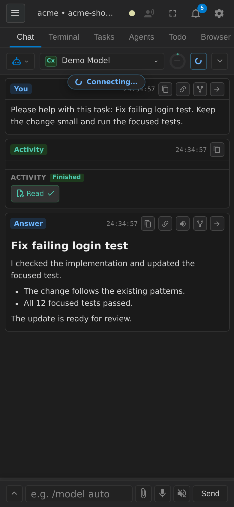

Getting started
Requirements and installation
Use Linux, macOS, or WSL2 on Windows; native Windows terminals are unsupported. Install Git and Node.js 22.18 or newer. Storage also requires bundled SQLite 3.51.0 or newer; Node 22.23.2 and 24.14 are documented examples. Native terminal dependencies may need a compiler; macOS may need Xcode Command Line Tools.
git clone https://github.com/cretli/cretli.git
cd cretli
npm install
npm run build:front:prod
npm start
Open https://localhost:3011. The default listener is local to this computer. Accept the self-signed certificate only for your own server. If certificates are missing, run npm run gen-cert and start again.
First session
Create the access password on the login page. After login, the current first-run dialog offers a chat backend and, when needed, a workspace folder. Select your project, such as my-app. Configure a backend in Settings → Harness, completing its sign-in or API-key setup, then create a chat and choose a model. Terminal and files work without provider credentials.
The expanded onboarding wizard is planned, not shipped. These instructions describe the existing setup dialog and Settings.

Updating
Back up application data and preserve your local changes before updating. Follow the release's Git instructions: the public master history may be rewritten, so an ordinary pull may not work. After obtaining the new source, run npm install, rebuild with npm run build:front:prod, and restart Cretli. Keep your existing application data. See Docker installation for containers and Troubleshooting for startup failures.